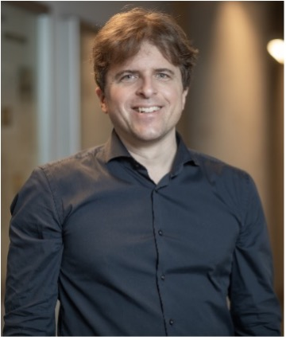

CNSM 2022 Distinguished Expert Panel
Intelligent Management of Disruptive Network Technologies
Softwarisation and slicing, alongside the commoditisation of programmable silicon technology have been transforming the networking industry over the past decade. From Software-Defined Networking and Network Function Virtualisation, to programmable dataplanes and in-network compute capabilities, there is a wealth of technological advancements now able to support the flexible deployment of advanced network services in short timescales.
However, so far, research has focused on the development of bespoke solutions solving very specific problems, typically over homogeneous and adequately provisioned ICT environments – mainly in the datacentre. Meeting the stringent performance requirements of such environments has meant that, despite the levels of network programmability and abstraction currently possible, practical solutions remain coupled to specific platforms and processing pipelines.
At the same time, the complexity and heterogeneity of the inter-connected ICT infrastructure are only increasing to include a plethora of deployed platforms and in-network acceleration paradigms, advanced service requirements based on computationally-intensive data-driven algorithms, and diverse and resource-constrained environments across the entire Cloud-to-Edge-to-Things continuum. This mix poses significant challenges for the intelligent network and services management over a processing continuum that cuts across administrative boundaries and incorporates many, diverse, and at times competing disruptive technologies (in terms of, e.g., computational intensiveness and tight performance deadlines).
This panel will explore those challenges as well as the associated opportunities that are expected to emerge in the years to come.
Panelists
Laurent Ciavaglia has recently joined Rakuten Mobile as Senior Researcher and Standardization Specialist in the Rakuten Mobile Innovation Studio. He has extensive experience in inventing future network automation technologies with a focus on intent-driven, zero-touch, and AI techniques. He is an active leader and participant in the research and standardization community, for instance, having served as vice-chair of the IEEE ComSoc Technical Committee on Network Operation and Management (CNOM) and serving as co-chair of the IRTF Network Management Research Group (NRMG). He has co-authored over 70 peer-reviewed articles and is regularly invited to give keynotes and attend expert panels.
Marco Mellia is a full professor at Politecnico di Torino in Italy, where he coordinates the SmartData@PoliTO centre, with more than 50 researchers work on Big Data, Data Science, Machine Learning and Artificial Intelligent approaches with applications to different areas, from cybersecurity to predictive maintenance, from anomaly detection to privacy preserving analytics. Marco is co-funder of Ermes Cyber Security SRL, a start-up which provides advanced anti-tracking and web-protection solutions based on Artificial Intelligence. Marco is Fellow of IEEE, winner of the IRTF ANR Prize, inventor of 13 patents, and author of more than 250 research articles. Marco’s research interest are in the intersection of machine learning, data science, and cybersecurity.

Stefan Schmid is a Full Professor at the Technical University of Berlin, Germany, working part-time for the Fraunhofer Institute for Secure Information Technology (SIT). He is also a Principle Investigator of the Weizenbaum Institute for the Networked Society in Berlin. He obtained his diploma (MSc) in Computer Science at ETH Zurich in Switzerland (minor: micro/macro economics, internship: CERN) and did his PhD in the Distributed Computing Group led by Prof. Roger Wattenhofer, also at ETH Zurich. As a postdoc, he worked with Prof. Christian Scheideler at the Chair for Efficient Algorithms at the Technical University of Munich and at the Chair for Theory of Distributed Systems at the University of Paderborn, in Germany. From 2009 to 2015, Stefan Schmid was a senior research scientist at the Telekom Innovation Laboratories (T-Labs) and at TU Berlin in Germany (Internet Network Architectures group headed by Prof. Anja Feldmann). In 2013/14, he was an INP Visiting Professor at CNRS (LAAS), Toulouse, France, and in 2014, a Visiting Professor at Université catholique de Louvain (UCL), Louvain-la-Neuve, Belgium. From 2015 to 2018, Stefan Schmid was a (tenured) Associate Professor in the Distributed, Embedded and Intelligent Systems group at Aalborg University, Denmark, and from 2018 to 2021, a Full Professor at the Faculty of Computer Science at the University of Vienna, Austria. Since 2021, he is a Council and Board member of the European Association of Theoretical Computer Science (EATCS) and also serves as the Editor-in-Chief of the Bulletin of the EATCS. Since 2019 Stefan Schmid is an Editor of IEEE/ACM Transactions on Networking (ToN). From 2015 to 2021, he was the Editor of the Distributed Computing Column of the Bulletin of the EATCS, and from 2016 to 2019, an Associate Editor of IEEE Transactions on Network and Service Management (TNSM). Stefan Schmid received the IEEE Communications Society ITC Early Career Award 2016 and acquired several major grants including an ERC Consolidator Grant, various other EU grants (e.g., STREP and IP projects) and national grants (e.g., three FWF projects), a German-Israeli GIF grant, a Villum Fonden grant, a WWTF grant, and various German grants (e.g., from BSI and BMBF). In 2015, he co-founded the startup company Stacktile supported by Germany's EXIST program, and in 2020, he helped establish the Vienna Cybersecurity and Privacy Research Center (ViSP) for which he also served in the executive board. Stefan Schmid's research interests revolve around the fundamental and algorithmic problems of networked and distributed systems.
 Dimitra Simeonidou is a Full Professor at the University of Bristol, the Co-Director of the Bristol Digital Futures Institute and the Director of Smart Internet Lab. Her research is focusing on the fields of high-performance networks, programmable networks, wireless-optical convergence, 5G/6G and smart city infrastructures. She is increasingly working with Social Sciences on topics of digital transformation for society and businesses. Dimitra has been the Technical Architect and the CTO of the smart city project Bristol Is Open. She is currently leading the Bristol City/Region 5G and Open RAN pilots.
She is the author and co-author of over 600 publications, numerous patents and several major contributions to standards.
She has been co-founder of two spin-out companies, the latest being the University of Bristol VC funded spin-out Zeetta Networks, http://www.zeetta.com, delivering SDN solutions for enterprise and emergency networks.
Dimitra is a Fellow of the Royal Academy of Engineering (FREng), a Fellow of the IEEE (FIEEE), Fellow of WWRF and a Royal Society Wolfson Scholar
Dimitra Simeonidou is a Full Professor at the University of Bristol, the Co-Director of the Bristol Digital Futures Institute and the Director of Smart Internet Lab. Her research is focusing on the fields of high-performance networks, programmable networks, wireless-optical convergence, 5G/6G and smart city infrastructures. She is increasingly working with Social Sciences on topics of digital transformation for society and businesses. Dimitra has been the Technical Architect and the CTO of the smart city project Bristol Is Open. She is currently leading the Bristol City/Region 5G and Open RAN pilots.
She is the author and co-author of over 600 publications, numerous patents and several major contributions to standards.
She has been co-founder of two spin-out companies, the latest being the University of Bristol VC funded spin-out Zeetta Networks, http://www.zeetta.com, delivering SDN solutions for enterprise and emergency networks.
Dimitra is a Fellow of the Royal Academy of Engineering (FREng), a Fellow of the IEEE (FIEEE), Fellow of WWRF and a Royal Society Wolfson Scholar